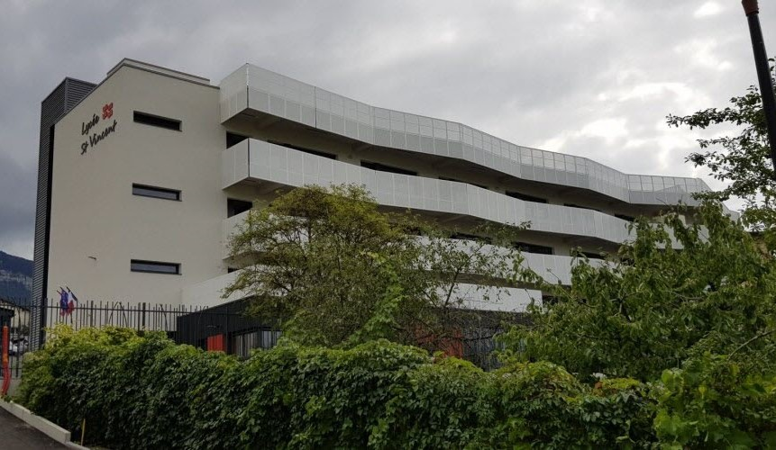
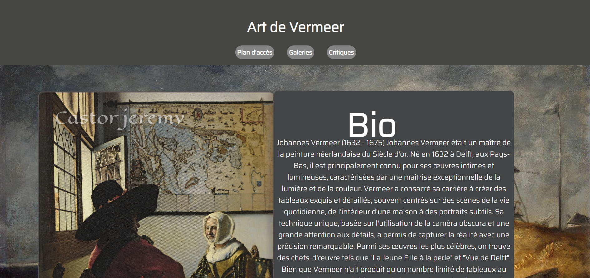
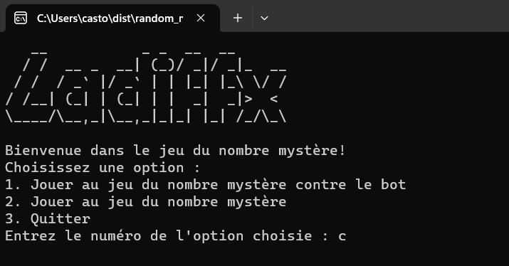

Actuellement, je suis en première année de BTS SIO au sein du Lycée Saint Michel à Annecy avec l'ption SISR ( Solution d'Infrastructure Système et Réseau)
En savoir plus ?J'ai passé toute ma scolarité au collège Arthur Rimbaud à Saint-Julien-en-genevois. J'ai ensuite obtenu mon brevet des collèges

Une réorientation s'est produite en informatique au lycée professionnel Saint Vincent à Collonges-sous-Salève avec une obtention du bac
HTML, CSS
Mise en place et configuration d'infrastructure réseau, serveur AD/DHCP/DNS et matériel cisco ( switch / routeur ) ainsi qu'une maitrise du logiciel Cisco Packet tracer, etc.
Cisco Packet Tracer

Création d'un site web qui respire l'art de Vermeer.

Développement d'un jeu en Python pour deviner un nombre mystère.